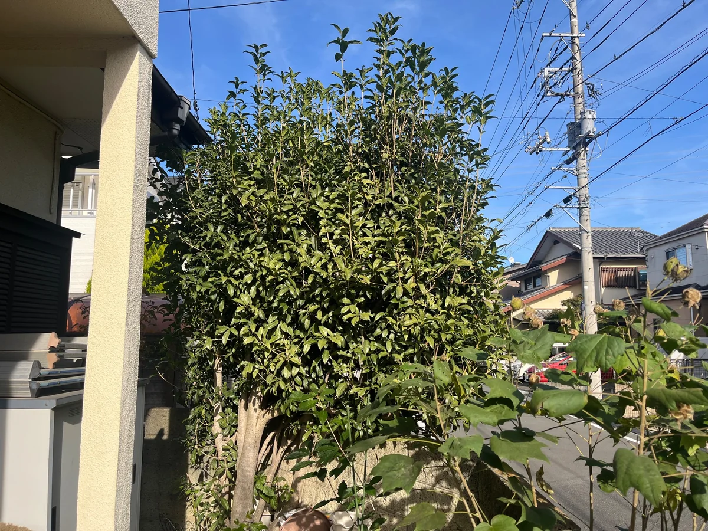
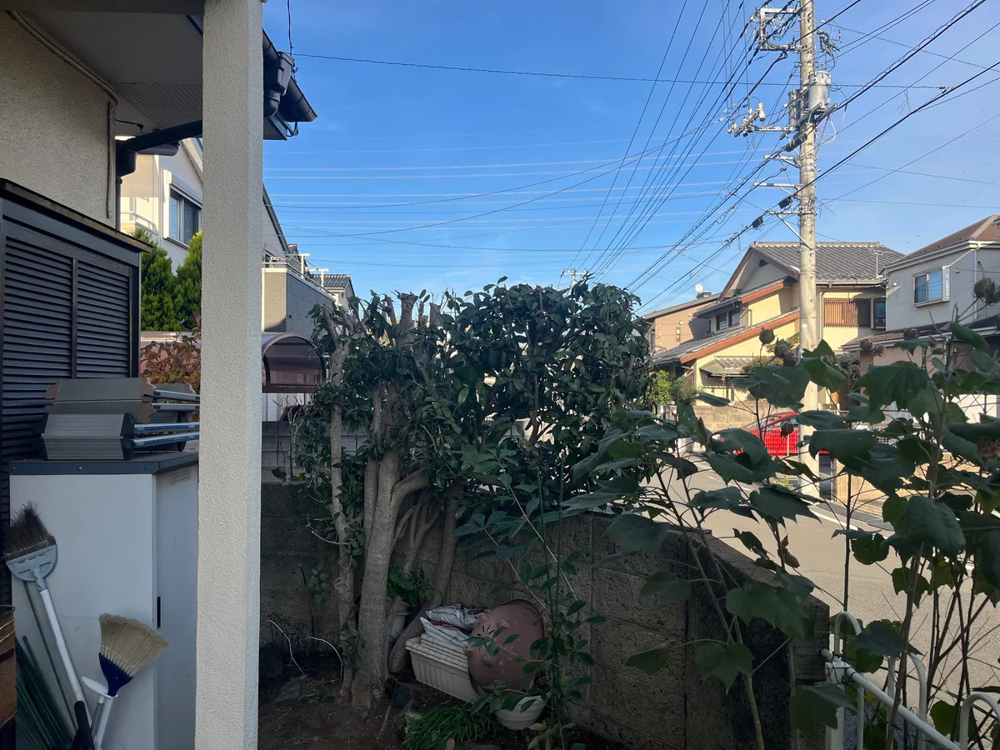
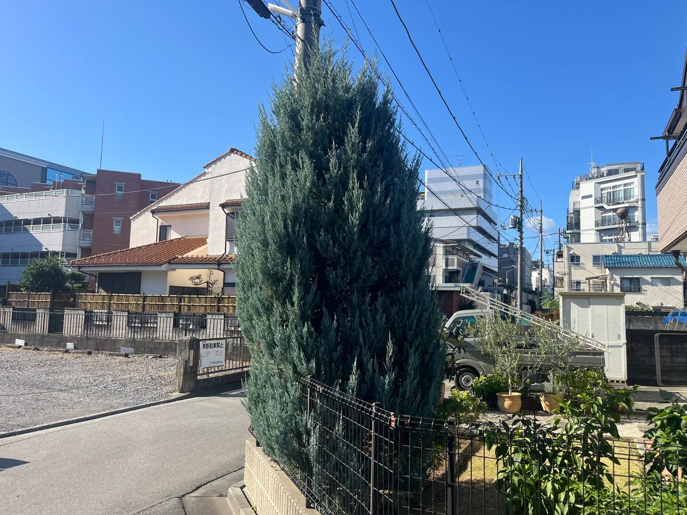
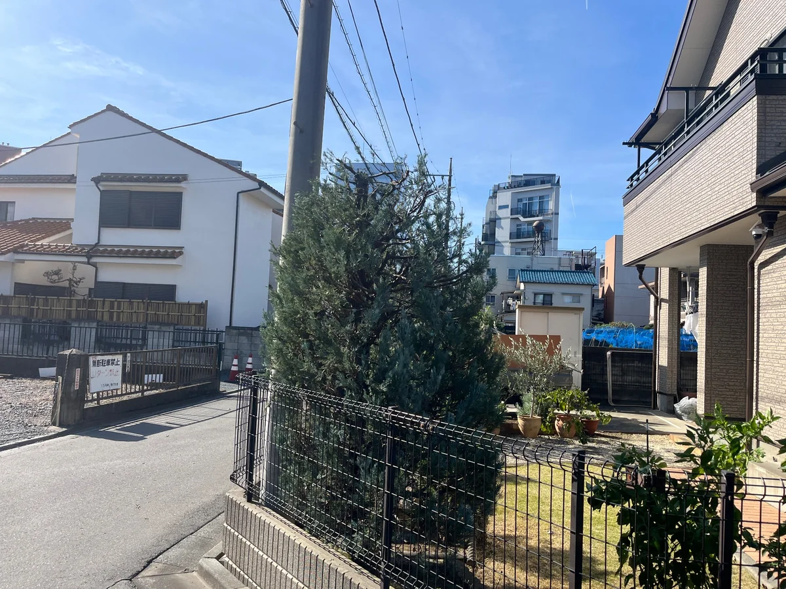
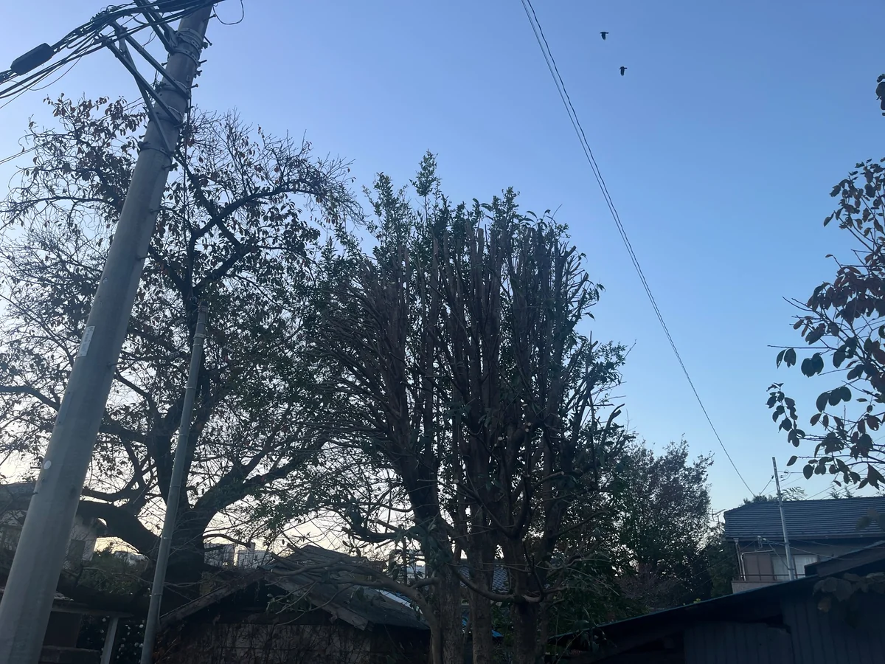
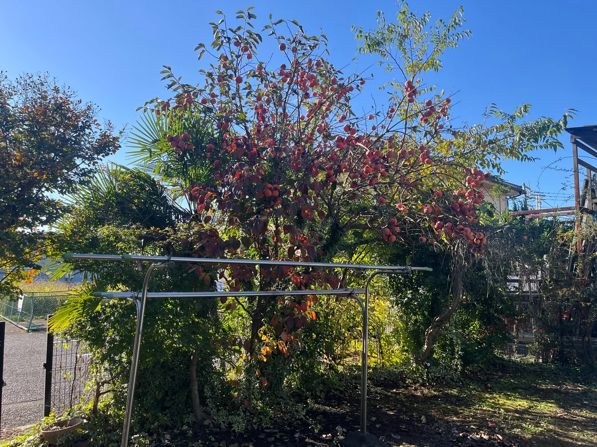
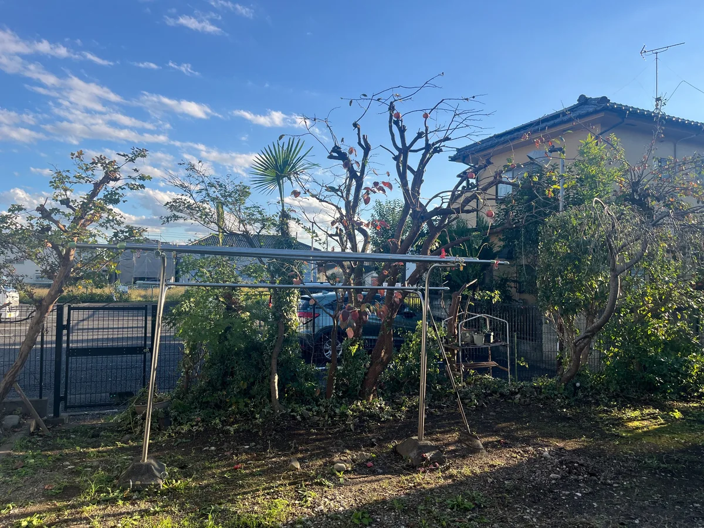
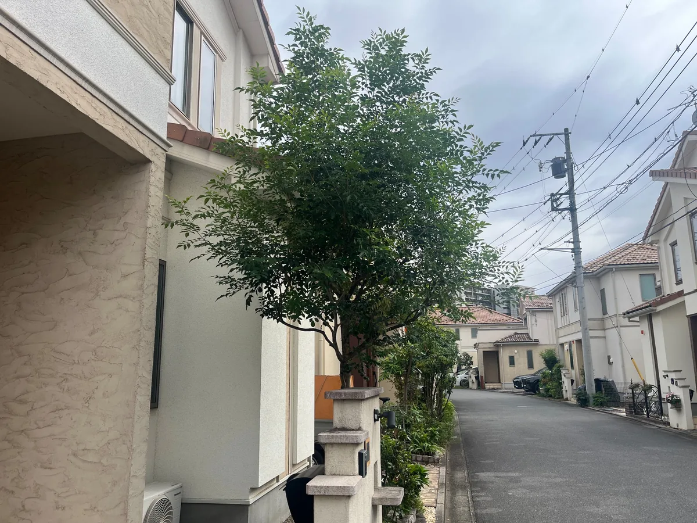
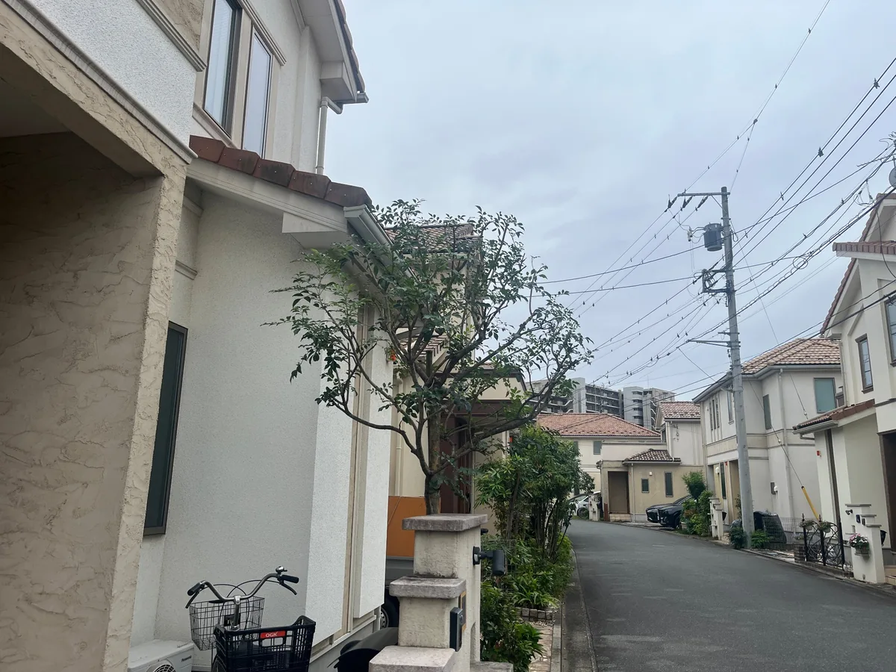
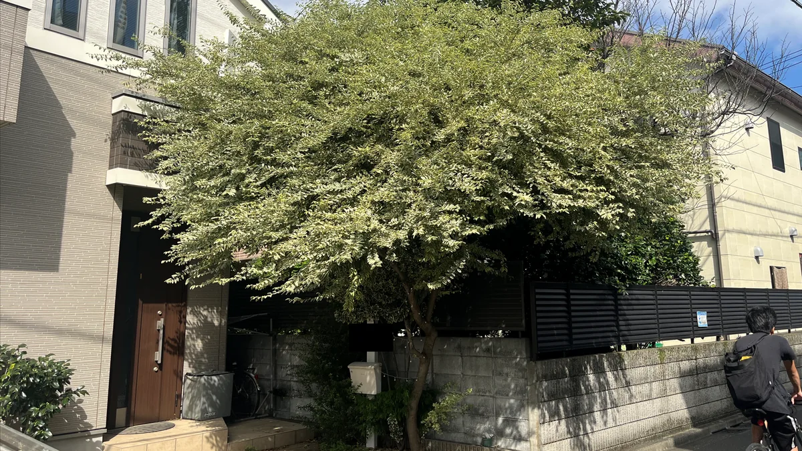

施工事例一覧
施工事例
実際に行った作業の施工前後写真・作業内容を掲載しています。
施工事例
施工地域・樹種・作業内容と施工前後の写真をご覧いただけます。


埼玉県ふじみ野市 / キンモクセイの高さ下げ・刈込
キンモクセイを約3m超から約1.5mに刈込
高さ3mを少し超えるキンモクセイを約1.5mまで下げ、周囲を刈り込みました。
施工内容を見る →

埼玉県川越市 / コニファーの高さ下げ・透かし剪定
コニファーの高さ下げと枝の透かし剪定
高さを下げ、側面は控えめに剪定し、内部の枝を透かして整えました。
施工内容を見る →

埼玉県川越市 / キンモクセイ剪定
キンモクセイの高さを約5mから約3mに
高さ約5mのキンモクセイを約3mに下げ、枝を整理しました。
施工内容を見る →

東京都昭島市 / 柿・松・キンモクセイなどのお手入れ
柿の実の回収と庭木のお手入れ
木に残っていた柿の実を回収し、松・キンモクセイなどをお手入れしました。
施工内容を見る →

埼玉県ふじみ野市 / シマトネリコ剪定
雨どいにかかったシマトネリコを剪定
雨どいへの接触を避けるため、高さを約30cm下げて枝葉を整えました。
施工内容を見る →

東京都世田谷区・M様邸 / プリペット剪定
約3mのプリペットを剪定
高さは程よく下げながら、横に広がっていた枝を詰めて全体の樹形を整えました。
施工内容を見る →